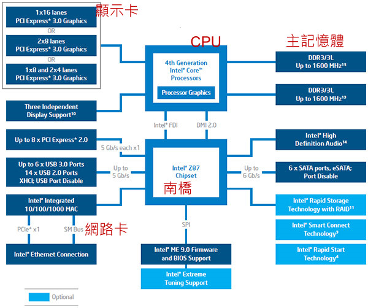

0.2 个人电脑架构与相关设备元件
一般消费者常说的电脑通常指的就是x86的个人电脑架构，因此我们有必要来了解一下这个架构的各个元件。事实上，Linux最早在发展的时候，就是依据个人电脑的架构来发展的， 所以真的得要了解一下呢！另外，早期两大主流x86开发商（Intel, AMD）的CPU架构与设计理念都有些许差异。不过互相学习对方长处的结果，就是两者间的架构已经比较类似了。 由于目前市场占有率还是以 Intel 为大宗，因此下面以目前（2015）相对较新的 Intel 主板架构来谈谈：
 图 0.2.1、Intel芯片架构
由于主板是链接各元件的一个重要项目，因此在主板上面沟通各部元件的芯片组设计优劣，就会影响性能不少喔！早期的芯片组通常分为两个桥接器来控制各元件的沟通， 分别是：（1）北桥：负责链接速度较快的CPU、内存与显卡接口等元件；（2）南桥：负责连接速度较慢的设备接口， 包括硬盘、USB、网卡等等。（芯片组的南北桥与三国的大小乔没有关系 @_@）。不过由于北桥最重要的就是 CPU 与内存之间的桥接，因此目前的主流架构中， 大多将北桥内存控制器整合到 CPU 封装当中了。所以上图你只会看到 CPU 而没有看到以往的北桥芯片喔！

Tips 早期芯片组分南北桥，北桥可以连接 CPU、内存与显卡。只是 CPU 要读写到内存的动作，还需要北桥的支持，也就是 CPU 与内存的交流， 会瓜分掉北桥的总可用带宽，真浪费！因此目前将内存控制器整合到 CPU 后，CPU与内存之间的沟通是直接交流，速度较快之外，也不会消耗更多的带宽！
毕竟目前世界上x86的CPU主要供应商为Intel，所以下面鸟哥将以Intel的主板架构说明各元件啰！ 我们以华硕公司出的主板，型号：Asus Z97-AR 作为一个说明的范例，搭配着主板芯片组逻辑图 0.2.1 的说明，主板各元件如下所示：
 图 0.2.2、ASUS 主板 （图片为华硕公司所有）
图 0.2.2、ASUS 主板 （图片为华硕公司所有）
上述的图片中，主板上面设计的插槽主要有 CPU （Intel LGA 1150 Socket）、内存 （DDR3 3200 support）、显卡接口 （PCIe3.0）、SATA 磁盘插槽 （SATA express）等等。 下面的元件在解说的时候，请参考上述两张图示来印证喔！
0.2.1 执行脑袋运算与判断的 CPU
如同华硕主板示意图上半部的中央部分，那就是CPU插槽。 由于CPU负责大量运算，因此CPU通常是具有相当高发热量的元件。所以如果你曾经拆开过主板， 应该就会看到CPU上头通常会安插一颗风扇来主动散热的。
x86个人电脑的CPU主要供应商为Intel与AMD，目前（2015）主流的CPU都是双核以上的架构了！ 原本的单核心CPU仅有一个运算单元，所谓的多核心则是在一颗CPU封装当中嵌入了两个以上的运算核心， 简单的说，就是一个实体的CPU外壳中，含有两个以上的CPU单元就是了。
不同的CPU型号大多具有不同的脚位（CPU上面的插脚），能够搭配的主板芯片组也不同， 所以当你想要将你的主机升级时，不能只考虑CPU，你还得要留意你的主板上面所支持的CPU型号喔！ 不然买了最新的CPU也不能够安插在你的旧主板上头的！目前主流的CPU有Intel的 i3/i5/i7 系列产品中，甚至先后期出厂的类似型号的脚位也不同， 例如 i7-2600 使用 LGA1155 脚位而 i7-4790 则使用 FCLGA1150 脚位，挑选时必须要很小心喔！
我们前面谈到CPU内部含有微指令集，不同的微指令集会导致CPU工作效率的优劣。除了这点之外， CPU性能的比较还有什么呢？那就是CPU的频率了！什么是频率呢？简单的说， 频率就是CPU每秒钟可以进行的工作次数。 所以频率越高表示这颗CPU单位时间内可以作更多的事情。举例来说，Intel的 i7-4790 CPU频率为3.6GHz， 表示这颗CPU在一秒内可以进行3.6x109次工作，每次工作都可以进行少数的指令运行之意。
Tips 注意，不同的CPU之间不能单纯的以频率来判断运算性能喔！这是因为每颗CPU的微指令集不相同，架构也不见得一样，可使用的第二层高速缓存及其计算机制可能也不同， 加上每次频率能够进行的工作指令数也不同！所以，频率目前仅能用来比较同款CPU的速度！
- CPU的工作频率：外频与倍频
早期的 CPU 架构主要通过北桥来链接系统最重要的 CPU、内存与显卡设备。因为所有的设备都得通过北桥来链接，因此每个设备的工作频率应该要相同。 于是就有所谓的前端总线 （FSB） 这个东西的产生。但因为 CPU 的运算速度比其他的设备都要来的快，又为了要满足 FSB 的频率，因此厂商就在 CPU 内部再进行加速， 于是就有所谓的外频与倍频了。
总结来说，在早期的 CPU 设计中，所谓的外频指的是CPU与外部元件进行数据传输时的速度，倍频则是 CPU 内部用来加速工作性能的一个倍数， 两者相乘才是CPU的频率速度。例如 Intel Core 2 E8400 的内频为 3.0GHz，而外频是333MHz，因此倍频就是9倍啰！（3.0G=333Mx9, 其中1G=1000M）
Tips 很多计算机硬件玩家很喜欢玩“超频”，所谓的超频指的是： 将CPU的倍频或者是外频通过主板的设置功能更改成较高频率的一种方式。但因为CPU的倍频通常在出厂时已经被锁定而无法修改， 因此较常被超频的为外频。 举例来说，像上述3.0GHz的CPU如果想要超频， 可以将他的外频333MHz调整成为400MHz，但如此一来整个主板的各个元件的运行频率可能都会被增加成原本的1.333倍（4/3）， 虽然CPU可能可以到达3.6GHz，但却因为频率并非正常速度，故可能会造成死机等问题。
但如此一来所有的数据都被北桥卡死了，北桥又不可能比 CPU 更快，因此这家伙常常是系统性能的瓶颈。为了解决这个问题，新的 CPU 设计中， 已经将内存控制器整合到 CPU 内部，而链接 CPU 与内存、显卡的控制器的设计，在Intel部份使用 QPI （Quick Path Interconnect） 与 DMI 技术，而 AMD 部份则使用 Hyper Transport 了，这些技术都可以让 CPU 直接与内存、显卡等设备分别进行沟通，而不需要通过外部的链接芯片了。
因为现在没有所谓的北桥了 （整合到 CPU 内），因此，CPU 的频率设计就无须考虑得要同步的外频，只需要考虑整体的频率即可。 所以，如果你经常有查阅自己 CPU 频率的习惯，当使用 cpu-z [9] 这个软件时，应该会很惊讶的发现到，怎么外频变成 100MHz 而倍频可以到达 30 以上！相当有趣呢！
Tips 现在 Intel 的 CPU 会主动帮你超频喔！例如 i7-4790 这颗 CPU 的规格 [10] 中，基本频率为 3.6GHz，但是最高可自动超频到 4GHz 喔！ 通过的是 Intel 的 turbo 技术。同时，如果你没有大量的运算需求，该 CPU 频率会降到 1.xGHz 而已，借此达到节能省电的目的！所以，各位好朋友， 不需要自己手动超频了！Intel 已经自动帮你进行超频了...所以，如果你用 cpu-z 观察 CPU 频率，发现该频率会一直自动变动，很正常！你的系统没坏掉！
- 32位与64位的CPU与总线“宽度”
从前面的简易说明中，我们知道 CPU 的各项数据通通得要来自于内存。因此，如果内存能提供给 CPU 的数据量越大的话，当然整体系统的性能应该也会比较快！ 那如何知道内存能提供的数据量呢？此时还是得要借由 CPU 内的内存控制芯片与内存间的传输速度“前端总线速度（Front Side Bus, FSB） 来说明。
与 CPU 的频率类似的，内存也是有其工作的频率，这个频率限制还是来自于 CPU 内的内存控制器所决定的。以图0.2.1 为例， CPU 内置的内存控制芯片对内存的工作频率最高可达到 1600MHz。这只是工作频率（每秒几次）。一般来说，每次频率能够传输的数据量，大多为 64 位，这个 64 位就是所谓的“宽度”了！ 因此，在图0.2.1 这个系统中，CPU可以从内存中取得的最快带宽就是 1600MHz 64bit = 1600MHz 8 Bytes = 12.8GByte/s。
与总线宽度相似的，CPU每次能够处理的数据量称为字组大小（word size）， 字组大小依据CPU的设计而有32位与64位。我们现在所称的电脑是32或64位主要是依据这个 CPU解析的字组大小而来的！早期的32位CPU中，因为CPU每次能够解析的数据量有限， 因此由内存传来的数据量就有所限制了。这也导致32位的CPU最多只能支持最大到4GBytes的内存。
Tips 得利于北桥整合到 CPU 内部的设计，CPU 得以“个别”跟各个元件进行沟通！因此，每种元件与 CPU 的沟通具有很多不同的方式！例如内存使用系统总线带宽来与 CPU 沟通。而显卡则通过PCI-E的序列信道设计来与CPU沟通喔！详细说明我们在本章稍后的主板部份再来谈谈。
- CPU等级
由于x86架构的CPU在Intel的Pentium系列（1993年）后就有不统一的脚位与设计，为了将不同种类的CPU规范等级， 所以就有i386,i586,i686等名词出现了。基本上，在Intel Pentium MMX与AMD K6年代的CPU称为i586等级， 而Intel Celeron与AMD Athlon（K7）年代之后的32位CPU就称为i686等级。 至于目前的64位CPU则统称为x86_64等级。
目前很多的程序都有对CPU做最优化的设计，万一哪天你发现一些程序是注明给x86_64的CPU使用时， 就不要将他安装在686以下等级的电脑中，否则可是会无法执行该软件的！ 不过，在x86_64的硬件下倒是可以安装386的软件喔！也就是说，这些东西具有向下相容的能力啦！
- 超线程 （Hyper-Threading, HT）
我们知道现在的 CPU 至少都是两个核心以上的多核心 CPU 了，但是 Intel 还有个很怪的东西，叫做 CPU 的超线程 （Hyper-Threading） 功能！ 那个是啥鬼东西？我们知道现在的 CPU 运算速度都太快了，因此运算核心经常处于闲置状态下。而我们也知道现在的系统大多都是多任务的系统， 同时间有很多的程序会让 CPU 来执行。因此，若 CPU 可以假象的同时执行两个程序，不就可以让系统性能增加了吗？反正 CPU 的运算能力还是没有用完啊！
那是怎么达成的啊这个 HT 功能？强者鸟哥的同事蔡董大大用个简单的说明来解释。在每一个 CPU 内部将重要的寄存器 （register） 分成两群， 而让程序分别使用这两群寄存器。也就是说，可以有两个程序“同时竞争 CPU 的运算单元”，而非通过操作系统的多任务切换！ 这一过程就会让 CPU 好像“同时有两个核心”的模样！因此，虽然大部分 i7 等级的 CPU 其实只有四个实体核心，但通过 HT 的机制， 则操作系统可以抓到八个核心！并且让每个核心逻辑上分离，就可以同时运行八个程序了。
虽然很多研究与测试中，大多发现 HT 虽然可以提升性能，不过，有些情况下却可能导致性能降低喔！因为，实际上明明就仅有一个运算单元嘛！ 不过在鸟哥使用数值模式的情况下，因为鸟哥操作的数值模式主要为平行运算功能，且运算通常无法达到 100% 的 CPU 使用率，通常仅有大约60%运算量而已。 因此在鸟哥的实作过程中，这个 HT 确实提升相当多的性能！至少应该可以节省鸟哥大约30%~50%的等待时间喔！不过网络上大家的研究中， 大多说这个是 case by case，而且使用的软件影响很大！所以，在鸟哥的例子是启用 HT 帮助很大！您的案例就得要自行研究啰！
0.2.2 内存
如同图0.2.2、华硕主板示意图中的右上方部分的那四根插槽，那就是内存的插槽了。 内存插槽中间通常有个突起物将整个插槽稍微切分成为两个不等长的距离， 这样的设计可以让使用者在安装内存时，不至于前后脚位安插错误，是一种防呆的设计喔。
前面提到CPU所使用的数据都是来自于内存（main memory），不论是软件程序还是数据，都必须要读入内存后CPU才能利用。 个人电脑的内存主要元件为动态随机存取内存（Dynamic Random Access Memory, DRAM）， 随机存取内存只有在通电时才能记录与使用，断电后数据就消失了。因此我们也称这种RAM为挥发性内存。
DRAM根据技术的更新又分好几代，而使用上较广泛的有所谓的SDRAM与DDR SDRAM两种。 这两种内存的差别除了在于脚位与工作电压上的不同之外，DDR是所谓的双倍数据传送速度（Double Data Rate）， 他可以在一次工作周期中进行两次数据的传送，感觉上就好像是CPU的倍频啦！ 所以传输频率方面比SDRAM还要好。新一代的PC大多使用DDR内存了。 下表列出SDRAM与DDR SDRAM的型号与频率及带宽之间的关系。[11]
| SDRAM/DDR | 型号 | 数据宽度（bit） | 内部频率（MHz） | 频率速度 | 带宽（频率x宽度） |
|---|---|---|---|---|---|
| SDRAM | PC100 | 64 | 100 | 100 | 800MBytes/sec |
| SDRAM | PC133 | 64 | 133 | 133 | 1064MBytes/sec |
| DDR | DDR-266 | 64 | 133 | 266 | 2.1GBytes/sec |
| DDR | DDR-400 | 64 | 200 | 400 | 3.2GBytes/sec |
| DDR | DDR2-800 | 64 | 200 | 800 | 6.4GBytes/sec |
| DDR | DDR3-1600 | 64 | 200 | 1600 | 12.8GBytes/sec |
DDR SDRAM又依据技术的发展，有DDR, DDR2, DDR3, DDR4等等，其中，DDR2 的频率倍数则是 4 倍而DDR3 则是 8 倍喔！ 目前鸟哥用到服务器等级的内存，已经到 DDR4 了耶！超快超快！
Tips 在图 0.2.1 中，内存的规格内提到 DDR3/DDR3L 同时支持，我们知道 DDR3 了，那 DDR3L 是啥鬼？ 为了节省更多的电力，新的制程中降低了内存的操作电压，因此 DDR3 标准电压为 1.5V，但 DDR3L 则仅须 1.35V 喔！通常可以用在耗电量需求更低的笔记本中！ 但并非所有的系统都同步支持！这就得要看主板的支持规格啰！否则你买了 DDR3L 安插在不支持的主板上，DDR3L 内存是可能会烧毁的喔！
内存除了频率/带宽与型号需要考虑之外，内存的容量也是很重要的喔！ 因为所有的数据都得要载入内存当中才能够被CPU判读，如果内存容量不够大的话将会导致某些大容量数据无法被完整的载入， 此时已存在内存当中但暂时没有被使用到的数据必须要先被释放，使得可用内存容量大于该数据，那份新数据才能够被载入呢！ 所以，通常越大的内存代表越快速的系统，这是因为系统不用常常释放一些内存内部的数据。 以服务器来说，内存的容量有时比CPU的速度还要来的重要的！
- 多通道设计
由于所有的数据都必须要存放在内存，所以内存的数据宽度当然是越大越好。 但传统的总线宽度一般大约仅达64位，为了要加大这个宽度，因此芯片组厂商就将两个内存汇整在一起， 如果一支内存可达64位，两支内存就可以达到128位了，这就是双通道的设计理念。
如上所述，要启用双通道的功能你必须要安插两支（或四支）内存，这两支内存最好连型号都一模一样比较好， 这是因为启动双通道内存功能时，数据是同步写入/读出这一对内存中，如此才能够提升整体的带宽啊！ 所以当然除了容量大小要一致之外，型号也最好相同啦！
你有没有发现图 0.2.2、华硕主板示意图上那四根内存插槽的颜色呢？是否分为两种颜色，且两两成对？ 为什么要这样设计？答出来了吗？是啦！这种颜色的设计就是为了双通道来的！要启动双通道的功能时， 你必须要将两根容量相同的内存插在相同颜色的插槽当中喔！
Tips 服务器所需要的速度更快！因此，除了双通道之外，中阶服务器也经常提供三信道，甚至四信道的内存环境！ 例如 2014 年推出的服务器用 E5-2650 v3 的 Intel CPU 中，它可以接受的最大信道数就是四信道且为 DDR4 喔！
- DRAM与SRAM
除了内存条之外，事实上整部个人电脑当中还有许许多多的内存存在喔！最为我们所知的就是CPU内的第二层高速缓存内存。 我们现在知道CPU的数据都是由内存提供，但CPU到内存之间还是得要通过内存控制器啊！ 如果某些很常用的程序或数据可以放置到CPU内部的话，那么CPU数据的读取就不需要跑到内存重新读取了！ 这对于性能来说不就可以大大的提升了？这就是第二层高速缓存的设计概念。第二层高速缓存与内存及CPU的关系如下图所示：
 图0.2.3、内存相关性
图0.2.3、内存相关性
因为第二层高速缓存（L2 cache）整合到CPU内部，因此这个L2内存的速度必须要CPU频率相同。 使用DRAM是无法达到这个频率速度的，此时就需要静态随机存取内存（Static Random Access Memory, SRAM）的帮忙了。 SRAM在设计上使用的电晶体数量较多，价格较高，且不易做成大容量，不过由于其速度快， 因此整合到CPU内成为高速缓存内存以加快数据的存取是个不错的方式喔！新一代的CPU都有内置容量不等的L2高速缓存在CPU内部， 以加快CPU的运行性能。
- 只读存储器（ROM）
主板上面的元件是非常多的，而每个元件的参数又具有可调整性。举例来说，CPU与内存的频率是可调整的； 而主板上面如果有内置的网卡或者是显卡时，该功能是否要启动与该功能的各项参数， 是被记录到主板上头的一个称为CMOS的芯片上，这个芯片需要借着额外的电源来发挥记录功能， 这也是为什么你的主板上面会有一颗电池的缘故。
那CMOS内的数据如何读取与更新呢？还记得你的电脑在开机的时候可以按下[Del]按键来进入一个名为BIOS的画面吧？ BIOS（Basic Input Output System）是一套程序，这套程序是写死到主板上面的一个内存芯片中， 这个内存芯片在没有通电时也能够将数据记录下来，那就是只读存储器（Read Only Memory, ROM）。 ROM是一种非挥发性的内存。另外，BIOS对于个人电脑来说是非常重要的， 因为他是系统在开机的时候首先会去读取的一个小程序喔！
另外，固件（firmware）[12]很多也是使用ROM来进行软件的写入的。 固件像软件一样也是一个被电脑所执行的程序，然而他是对于硬件内部而言更加重要的部分。例如BIOS就是一个固件， BIOS虽然对于我们日常操作电脑系统没有什么太大的关系，但是他却控制着开机时各项硬件参数的取得！ 所以我们会知道很多的硬件上头都会有ROM来写入固件这个软件。
BIOS 对电脑系统来讲是非常重要的，因为他掌握了系统硬件的详细信息与开机设备的选择等等。但是电脑发展的速度太快了， 因此 BIOS 程序码也可能需要作适度的修改才行，所以你才会在很多主板官网找到 BIOS 的更新程序啊！但是 BIOS 原本使用的是无法改写的 ROM ，因此根本无法修正 BIOS 程序码！为此，现在的 BIOS 通常是写入类似闪存 （flash） 或 EEPROM [13] 中。[14]
Tips 很多硬件上面都会有固件喔！例如鸟哥常用的磁盘阵列卡、 10G 的网卡、交换器设备等等！你可以简单的这么想！固件就是绑在硬件上面的控制软件！
0.2.3 显卡
显卡插槽如同图 0.2.2、华硕主板示意图所示，在中左方有个 PCIe 3.0 的项目， 这张主板中提供了两个显卡插槽喔！
显卡又称为VGA（Video Graphics Array），他对于图形影像的显示扮演相当关键的角色。 一般对于图形影像的显示重点在于分辨率与色彩深度，因为每个图像显示的颜色会占用掉内存， 因此显卡上面会有一个内存的容量，这个显存容量将会影响到你的屏幕分辨率与色彩深度的喔！
除了显存之外，现在由于三度空间游戏（3D game）与一些3D动画的流行，因此显卡的“运算能力”越来越重要。 一些3D的运算早期是交给CPU去运行的，但是CPU并非完全针对这些3D来进行设计的，而且CPU平时已经非常忙碌了呢！ 所以后来显卡厂商直接在显卡上面嵌入一个3D加速的芯片，这就是所谓的GPU称谓的由来。
显卡主要也是通过CPU的控制芯片来与CPU、内存等沟通。如前面提到的，对于图形影像（尤其是3D游戏）来说， 显卡也是需要高速运算的一个元件，所以数据的传输也是越快越好！因此显卡的规格由早期的PCI导向AGP， 近期AGP又被PCI-Express规格所取代了。如前面华硕主板图示当中看到的就是PCI-Express的插槽。 这些插槽最大的差异就是在数据传输的带宽了！如下所示：
| 规格 | 宽度 | 速度 | 带宽 |
|---|---|---|---|
| PCI | 32 bits | 33 MHz | 133 MBytes/s |
| PCI 2.2 | 64 bits | 66 MHz | 533 MBytes/s |
| PCI-X | 64 bits | 133 MHz | 1064 MBytes/s |
| AGP 4x | 32 bits | 66x4 MHz | 1066 MBytes/s |
| AGP 8x | 32 bits | 66x8 MHz | 2133 MBytes/s |
| PCIe 1.0 x1 | 无 | 无 | 250 MBytes/s |
| PCIe 1.0 x8 | 无 | 无 | 2 GBytes/s |
| PCIe 1.0 x16 | 无 | 无 | 4 GBytes/s |
比较特殊的是，PCIe（PCI-Express）使用的是类似管线的概念来处理，在 PCIe 第一版 （PCIe 1.0） 中，每条管线可以具有250MBytes/s的带宽性能， 管线越多（通常设计到 x16 管线）则总带宽越高！另外，为了提升更多的带宽，因此 PCIe 还有进阶版本，目前主要的版本为第三版，相关的带宽如下：[15]
| 规格 | 1x带宽 | 16x带宽 |
|---|---|---|
| PCIe 1.0 | 250MByte/s | 4GByte/s |
| PCIe 2.0 | 500MByte/s | 8GByte/s |
| PCIe 3.0 | ~1GByte/s | ~16GByte/s |
| PCIe 4.0 | ~2GByte/s | ~32GByte/s |
若以图0.2.2的主板为例，它使用的是 PCIe 3.0 的 16x，因此最大带宽就可以到达接近 32GBytes/s 的传输量！ 比起AGP是快很多的！好可怕的传输量....
如果你的主机是用来打3D游戏的，那么显卡的选购是非常重要喔！如果你的主机是用来做为网络服务器的， 那么简单的入门级显卡对你的主机来说就非常够用了！因为网络服务器很少用到3D与图形影像功能。
例题：假设你的桌面使用1024x768分辨率，且使用全彩（每个像素占用3Bytes的容量），请问你的显卡至少需要多少内存才能使用这样的彩度？答：因为1024x768分辨率中会有786432个像素，每个像素占用3Bytes，所以总共需要2.25MBytes以上才行！ 但如果考虑屏幕的更新率（每秒钟屏幕的更新次数），显卡的内存还是越大越好！
除了显卡与主板的连接接口需要知道外，那么显卡是通过什么格式与电脑屏幕 （或电视） 连接的呢？目前主要的连接接口有：
- D-Sub （VGA端子）：为较早之前的连接接口，主要为 15 针的连接，为模拟讯号的传输，当初设计是针对传统图像管屏幕而来。 主要的规格有标准的 640x350px @70Hz、1280x1024px @85Hz 及 2048x1536px @85Hz 等。
- DVI：共有四种以上的接头，不过台湾市面上比较常见的为仅提供数码讯号的 DVI-D，以及整合数码与模拟讯号的 DVI-I 两种。DVI 常见于液晶屏幕的链接， 标准规格主要有： 1920x1200px @60Hz、 2560x1600px @60Hz 等。
- HDMI：相对于 D-sub 与 DVI 仅能传送影像数据，HDMI 可以同时传送影像与声音，因此被广泛的使用于电视屏幕中！电脑屏幕目前也经常都有支持 HDMI 格式！
- Display port：与 HDMI 相似的，可以同时传输声音与影像。不过这种接口目前在台湾还是比较少屏幕的支持！
0.2.4 硬盘与储存设备
电脑总是需要记录与读取数据的，而这些数据当然不可能每次都由使用者经过键盘来打字！所以就需要有储存设备咯。 电脑系统上面的储存设备包括有：硬盘、软盘、MO、CD、DVD、磁带机、U盘（闪存）、还有新一代的蓝光光驱等， 乃至于大型机器的区域网络储存设备（SAN, NAS）等等，都是可以用来储存数据的。而其中最常见的应该就是硬盘了吧！
- 硬盘的物理组成
大家应该都看过硬盘吧！硬盘依据台式机与笔记本电脑而有分为3.5英寸及2.5英寸的大小。我们以3.5英寸的台式机使用硬盘来说明。 在硬盘盒里面其实是由许许多多的圆形盘片、机械手臂、 磁头与主轴马达所组成的，整个内部如同下图所示：
 图0.2.4、硬盘物理构造（图片取自维基百科）
图0.2.4、硬盘物理构造（图片取自维基百科）
实际的数据都是写在具有磁性物质的盘片上头，而读写主要是通过在机械手臂上的磁头（head）来达成。 实际运行时， 主轴马达让盘片转动，然后机械手臂可伸展让磁头在盘片上头进行读写的动作。 另外，由于单一盘片的容量有限，因此有的硬盘内部会有两个以上的盘片喔！
- 盘片上的数据
既然数据都是写入盘片上头，那么盘片上头的数据又是如何写入的呢？其实盘片上头的数据有点像下面的图示所示：
 图0.2.5、盘片上的数据格式（图片取自维基百科）
图0.2.5、盘片上的数据格式（图片取自维基百科）
由于盘片是圆的，并且通过机器手臂去读写数据，盘片要转动才能够让机器手臂读写。因此，通常数据写入当然就是以圆圈转圈的方式读写啰！ 所以，当初设计就是在类似盘片同心圆上面切出一个一个的小区块，这些小区块整合成一个圆形，让机器手臂上的磁头去存取。 这个小区块就是磁盘的最小物理储存单位，称之为扇区 （sector），那同一个同心圆的扇区组合成的圆就是所谓的磁道（track）。 由于磁盘里面可能会有多个盘片，因此在所有盘片上面的同一个磁道可以组合成所谓的柱面 （cylinder）。
我们知道同心圆外圈的圆比较大，占用的面积比内圈多啊！所以，为了善用这些空间，因此外围的圆会具有更多的扇区[16]！ 就如同图 0.2.5 的示意一般。此外，当盘片转一圈时，外圈的扇区数量比较多，因此如果数据写入在外圈，转一圈能够读写的数据量当然比内圈还要多！ 因此通常数据的读写会由外圈开始往内写的喔！这是默认值啊！
另外，原本硬盘的扇区都是设计成 512Byte 的容量，但因为近期以来硬盘的容量越来越大，为了减少数据量的拆解，所以新的大容量硬盘已经有 4KByte 的扇区设计！ 购买的时候也需要注意一下。也因为这个扇区的设计不同了，因此在磁盘的分区方面，目前有旧式的 MSDOS 相容模式，以及较新的 GPT 模式喔！ 在较新的 GPT 模式下，磁盘的分区通常使用扇区号码来设计，跟过去旧的 MSDOS 是通过柱面号码来分区的情况不同喔！相关的说明我们谈到磁盘管理 （第七章） 再来聊！
- 传输接口
为了要提升磁盘的传输速度，磁盘与主板的连接接口也经过多次的改版，因此有许多不同的接口喔！传统磁盘接口包括有 SATA, SAS, IDE 与 SCSI 等等。 若考虑外接式磁盘，那就还包括了 USB, eSATA 等等接口喔！不过目前 IDE 已经被 SATA 取代，而 SCSI 则被 SAS 取代，因此我们下面将仅介绍 SATA, USB 与 SAS 接口而已。
- SATA接口
如同华硕主板图示右下方所示为SATA硬盘的连接接口插槽。这种插槽所使用的排线比较窄小， 而且每个设备需要使用掉一条SATA线。因为SATA线比较窄小之故，所以对于安装与机箱内的通风都比较好！因此原本的IDE粗排线接口就被SATA取代了！ SATA的插槽示意图如下所示：
 图0.2.6、SATA 接口的排线 （图示取自 Seagate 网站）
图0.2.6、SATA 接口的排线 （图示取自 Seagate 网站）
由于SATA一条排线仅接一颗硬盘，所以你不需要调整跳针。不过一张主板上面SATA插槽的数量并不是固定的， 且每个插槽都有编号，在连接SATA硬盘与主板的时候，还是需要留意一下。此外，目前的 SATA 版本已经到了第三代 [17]， 每一代之间的传输速度如下所示，而且重点是，每一代都可以向下相容喔！只是速度上会差很多就是了。目前主流都是使用 SATA3 这个接口速度可达 600MByte/s 的接口！
| 版本 | 带宽 （Gbit/s） | 速度 （MByte/s） |
|---|---|---|
| SATA 1.0 | 1.5 | 150 |
| SATA 2.0 | 3 | 300 |
| SATA 3.0 | 6 | 600 |
因为 SATA 传输接口传输时，通过的数据演算法的关系，当传输 10 位编码时，仅有 8 位为数据，其余 2 位为检验之用。因此带宽的计算上面， 使用的换算 （bit 转 Byte） 为 1:10 而不是 1Byte=8bits 喔！上表的对应要稍微注意一下。另外，虽然这个 SATA3 接口理论上可达 600MBytes/s 的传输速度， 不过目前传统的硬盘由于其物理组成的限制，一般极限速度大约在 150~200MByte/s 而已啦！所以厂商们才要发展固态硬盘啊！ ^_^
- SAS接口
早期工作站或大型大脑上面，为了读写速度与稳定性，因此在这样的机器上面，大多使用的是 SCSI 这种高阶的连接接口。 不过这种接口的速度后来被 SATA 打败了！但是 SCSI 有其值得开发的功能，因此后来就有串行式 SCSI （Serial Attached SCSI, SAS） 的发展。这种接口的速度比 SATA 来的快，而且连接的 SAS 硬盘的盘片转速与传输的速度也都比 SATA 硬盘好！ 只是...好贵喔！而且一般个人电脑的主板上面通常没有内置 SAS 连接接口，得要通过外接卡才能够支持。因此一般个人电脑主机还是以 SATA 接口为主要的磁盘连接接口啰。
| 版本 | 带宽 （Gbit/s） | 速度 （MByte/s） |
|---|---|---|
| SAS 1 | 3 | 300 |
| SAS 2 | 6 | 600 |
| SAS 3 | 12 | 1200 |
因为这种接口的速度确实比较快喔！而且还支持例如热拔插等功能，因此，许多的设备连接会以这种接口来链接！ 例如我们经常会听到的磁盘阵列卡的连接插槽，就是利用这种 SAS 接口开发出来的支持的 SFF-8087 设备等等的 [18]。
- USB接口
如果你的磁盘是外接式的接口，那么很可能跟主板链接的就是 USB 这种接口了！这也是目前 （2015） 最常见到的外接式磁盘接口了。 不过传统的 USB 速度挺慢的，即使是比较慢的传统硬盘，其传输率大概兜还有 80~120MBytes/s ，但传统的 USB 2.0 仅有大约 60MBytes/s 的理论传输率， 通常实做在主板上面的连接口，竟然都仅有 30~40 MByte/s 而已呢！实在发挥不出磁盘的性能啊！
为了改善 USB 的传输率，因此新一代的 USB 3.0 速度就快很多了！据说还有更新的 USB 3.1 正在发展中！这几代版本的带宽与速度制表如下 [19]：
| 版本 | 带宽 （Mbit/s） | 速度 （MByte/s） |
|---|---|---|
| USB 1.0 | 12 | 1.5 |
| USB 2.0 | 480 | 60 |
| USB 3.0 | 5G | 500 |
| USB 3.1 | 10G | 1000 |
跟 SATA 接口一样，不是理论速度到达该数值，实际上就可以跑到这么高！USB 3.0 虽然速度很快，但如果你去市面上面买 USB 的传统磁盘或闪存盘， 其实他的读写速度还是差不多在 100MBytes/s 而已啦！不过这样就超级快了！因为一般 USB2.0 的闪存盘读写速度大约是 40MBytes/10MBytes 左右而已说。 在购买这方面的外接式磁盘时，要特别考虑喔！
- 固态硬盘 （Solid State Disk, SSD）
传统硬盘有个很致命的问题，就是需要驱动马达去转动盘片～这会造成很严重的磁盘读取延迟！想想看，你得要知道数据在哪个扇区上面，然后再命令马达开始转， 之后再让磁头去读取正确的数据。另外，如果数据放置的比较离散（扇区分佈比较广又不连续），那么读写的速度就会延迟更明显！速度快不起来。因此， 后来就有厂商拿闪存去制作成大容量的设备，这些设备的连接接口也是通过 SATA 或 SAS，而且外型还做的跟传统磁盘一样！所以， 虽然这类的设备已经不能称为是磁盘 （因为没有磁头与盘片啊！都是内存！）。但是为了方便大家称呼，所以还是称为磁盘！只是跟传统磁盘 （Hard Disk Drive, HDD） 不同， 就称为固态硬盘 （Solid State Disk 或 Solid State Driver, SSD）。
固态硬盘最大的好处是，它没有马达不需要转动，而是通过内存直接读写的特性，因此除了没数据延迟且快速之外，还很省电！ 不过早期的 SSD 有个很重要的致命伤，就是这些闪存有“写入次数的限制”，因此通常 SSD 的寿命大概两年就顶天了！所以数据存放时， 需要考虑到备份或者是可能要使用 RAID 的机制来防止 SSD 的损毁[20]！
Tips SSD 真的好快！鸟哥曾经买过 Intel 较顶级的 SSD 来做过服务器的读取系统盘，然后使用类似 dd 的指令去看看读写的速度，竟然真的如同 intel 自己官网说的， 极速可以到达 500MBytes/s 哩！几乎就是 SATA3.0 的理论极限速度了！所以，近来在需要大量读取的环境中，鸟哥都是使用 SSD 阵列来处理！
其实我们在读写磁盘时，通常没有连续读写，大部分的情况下都是读写一大堆小文件，因此，你不要妄想传统磁盘一直转很少圈就可以读到所有的数据！ 通常很多小文件的读写，会很耗硬盘，因为盘片要转好多圈！这也很花人类的时间啊！SSD 就没有这个问题！也因为如此，近年来在测试磁盘的性能时， 有个很特殊的单位，称为每秒读写操作次数 （Input/Output Operations Per Second, IOPS）！这个数值越大，代表可操作次数较高，当然性能好的很！
- 选购与运行须知
如果你想要增加一颗硬盘在你的主机里头时，除了需要考虑你的主板可接受的插槽接口（SATA/SAS）之外，还有什么要注意的呢？
HDD 或 SSD 毕竟 HDD 与 SSD 的价格与容量真的差很多！不过，速度也差很多就是了！因此，目前大家的使用方式大多是这样的，使用 SSD 作为系统盘， 然后数据储存大多放置在 HDD 上面！这样系统运行快速 （SSD），而数据储存量也大 （HDD）。
容量 毕竟目前数据量越来越大，所以购买磁盘通常首先要考虑的就是容量的问题！目前（2015）主流市场HDD容量已经到达 2TB以上， 甚至有的厂商已经生产高达 8TB 的产品呢！硬盘可能可以算是一种消耗品，要注意重要数据还是得常常备份出来喔！ 至于 SSD 方面，目前的容量大概还是在 128~256GB 之间吧！
缓冲内存 硬盘上头含有一个缓冲内存，这个内存主要可以将硬盘内常使用的数据高速缓存起来，以加速系统的读取性能。 通常这个缓冲内存越大越好，因为缓冲内存的速度要比数据从硬盘盘中被找出来要快的多了！ 目前主流的产品可达64MB左右的内存大小喔。
转速 因为硬盘主要是利用主轴马达转动盘片来存取，因此转速的快慢会影响到性能。 主流的台式机硬盘为每分钟7200转，笔记本电脑则是5400转。有的厂商也有推出高达10000转的硬盘， 若有高性能的数据存取需求，可以考虑购买高转速硬盘。
运行须知 由于硬盘内部机械手臂上的磁头与硬盘盘的接触是很细微的空间， 如果有抖动或者是脏污在磁头与硬盘盘之间就会造成数据的损毁或者是实体硬盘整个损毁～ 因此，正确的使用电脑的方式，应该是在电脑通电之后，就绝对不要移动主机，并免抖动到硬盘， 而导致整个硬盘数据发生问题啊！另外，也不要随便将插头拔掉就以为是顺利关机！因为机械手臂必须要归回原位， 所以使用操作系统的正常关机方式，才能够有比较好的硬盘保养啊！因为他会让硬盘的机械手臂归回原位啊！
Tips 可能因为环境的关系，电脑内部的风扇常常会卡灰尘而造成一些声响。很多朋友只要听到这种声响都是二话不说的 “用力拍几下机箱”就没有声音了～现在你知道了，这么做的后果常常就是你的硬盘容易坏掉！ 下次千万不要再这样做啰！
0.2.5 扩展卡与接口
你的服务器可能因为某些特殊的需求，因此需要使用主板之外的其他适配卡。所以主板上面通常会预留多个扩充接口的插槽， 这些插槽依据历史沿革，包括 PCI/AGP/PCI-X/PCIe 等等，但是由于 PCIe 速度快到太好用了，因此几乎所有的卡都以 PCIe 来设计了！ 但是有些比较老旧的卡可能还需要使用啊，因此一般主板大多还是会保留一两个 PCI 插槽，其他的则是以 PCIe 来设计。
由于各元件的价格直直落，现在主板上面通常已经整合了相当多的设备元件了！ 常见整合到主板的元件包括声卡、网卡、USB控制卡、显卡、磁盘阵列卡等等。 你可以在主板上面发现很多方形的芯片，那通常是一些个别的设备芯片喔。
不过，因为某些特殊的需求，有时你可能还是需要增加额外的扩展卡的。举例来说，我们如果需要一部个人电脑连接多个网域时（Linux 服务器用途）， 恐怕就得要有多个网卡。当你想要买网卡时，大卖场上面有好多耶！而且速度一样都是 giga 网卡 （Gbit/s），但价格差很多耶！ 观察规格，主要有 PCIe x1 以及 PCI 接口的！你要买哪种接口呢？
观察一下 0.2.3 显卡的章节内，你会发现到 PCI 接口的理论传输率最高指到 133MBytes/s 而已，而 PCIe 2.0 x1 就高达 500MBytes/s 的速度！ 鸟哥实测的结果也发现，PCI 接口的 giga 网卡极限速度大约只到 60MBytes/s 而已，而 PCIe 2.0 x1 的 giga 网卡确实可以到达大约 110MBytes/s 的速度！ 所以，购买设备时，还是要查清楚连接接口才行啦！
在 0.2.3 节也谈到 PCIe 有不同的信道数，基本上常见的就是 x1, x4, x8, x16 等，个人电脑主板常见是 x16 的，一般中阶服务器则大多有多个 x8 的接口， x16 反而比较少见。这些接口在主板上面的设计，主要是以插槽的长度来看的，例如华硕主板示意图中，左侧有 2 个 PCI 接口， 其他的则是 3 个 x16 的插槽，以及 2 个 x1 的插槽，看长度就知道了。
- 多信道卡 （例如 x8 的卡） 安装在少信道插槽 （例如 x4 的插槽） 的可用性
再回头看看图 0.2.1 的示意图，你可以发现 CPU 最多最多仅能支持 16 个 PCIe 3.0 的信道数，因此在图示当中就明白的告诉你， 你可以设计（1）一个 x16 （2）或者是两个 x8 ，（3）或者是两个 x4 加上一个 x8 的方式来增加扩展卡！这是可以直接链接到 CPU 的信道！咦！ 那为何图 0.2.2 可以有 3 个 x16 的插槽呢？原因是前两个属于 CPU 支持的，后面两个可能就是南桥提供的 PCIe 2.0 的接口了！ 那明明最多仅能支持一个 x16 的接口，怎么可能设计 3 个 x16 呢？
因为要让所有的扩展卡都可以安插在主板上面，所以在比较中高阶的主板上面，他们都会做出 x16 的插槽，但是该插槽内其实只有 x8 或 x4 的信道有用！ 其他的都是空的没有金手指 （电路的意思）～咦！那如果我的 x16 的卡安装在 x16 的插槽，但是这个插槽仅有 x4 的电路设计，那我这张卡可以运行吗？ 当然可以！这就是 PCIe 的好处了！它可以让你这张卡仅使用 x4 的电路来传送数据，而不会无法使用！只是...你的这张卡的极限性能，就会只剩下 4/16 = 1/4 啰！
因为一般服务器惯用的扩展卡，大多数都使用 PCIe x8 的接口 （因为也没有什么设备可以将 PCIe 3.0 的 x8 速度用完啊！）， 为了增加扩展卡的数量，因此服务器级的主板才会大多使用到 x8 的插槽说！反正，要发挥扩展卡的能力，就得要搭配相对应的插槽才行啦！
Tips 鸟哥近年来在搞小型云教室，为了加速需要有 10G 的网卡，这些网卡标准的接口为 PCIe 2.0 x8 的接口。有部主机上面需要安插这样的卡三张才行， 结果该主机上面仅有一个 x16，一个 x8 以及一个 x4 的 PCIe 接口，其中 x4 的那个接口使用的是 x8 的插槽，所以好佳在三张卡都可以安装在主板上面，且都可以运行！ 只是在极速运行时，实测的性能结果发现，那个安插在 x4 接口的网卡性能降很多！所以才会发现这些问题！提供给大家参考参考！
0.2.6 主板
这个小节我们特别再将主板拿出来说明一下，特别要讲的就是芯片组与扩展卡之间的关系了！
- 发挥扩展卡性能须考虑的插槽位置
如同图 0.2.1 所示，其实系统上面可能会有多个 x8 的插槽，那么到底你的卡插在哪个插槽上面性能最好？ 我们以该图来说，如果你是安插在左上方跟 CPU 直接连线的那几个插槽，那性能最佳！如果你是安插在左侧由上往下数的第五个 PCIe 2.0 x8 的插槽呢？ 那个插槽是与南桥连接，所以你的扩展卡数据需要先进入南桥跟大家抢带宽，之后要传向 CPU 时，还得要通过 CPU 与南桥的沟通管道， 那条管道称为 DMI 2.0。
根据 Intel 方面的数据来看，DMI 2.0 的传输率是 4GT/s，换算成文件传输量时，大约仅有 2GByte/s 的速度， 要知道，PCIe 2.0 x8 的理论速度已经达到 4GByte/s 了，但是与 CPU 的信道竟然仅有 2GB，性能的瓶颈就这样发生在 CPU 与南桥的沟通上面！ 因此，卡安装在哪个插槽上面，对性能而言也是影响很大的！所以插卡时，请详细阅读您主板上面的逻辑图示啊 （类似本章的 Intel 芯片示意图）！ 尤其 CPU 与南桥沟通的带宽方面，特别重要喔！
Tips 因为鸟哥的 Linux 服务器，目前很多都需要执行一些虚拟化技术等会大量读写数据的服务，所以需要额外的磁盘阵列卡来提供数据的存放！ 同时得要提供 10G 网络让内部的多部服务器互相通过网络链接。过去没有这方面的经验时，扩展卡都随意乱插，反正能动就好！但实际分析过性能之后， 哇！现在都不敢随便乱插了！性能差太多！每次在选购新的系统时，也都会优先去查看芯片逻辑图～确认性能瓶颈不会卡住在主板上，这才下手去购买！ 惨痛的经验产生惨痛的 $$ 飞走事件，所以，这里特别提出来跟大家分享的啦！
- 设备I/O位址与IRQ中断信道
主板是负责各个电脑元件之间的沟通，但是电脑元件实在太多了，有输出/输入/不同的储存设备等等， 主板芯片组怎么知道如何负责沟通呐？这个时候就需要用到所谓的I/O位址与IRQ啰！
I/O位址有点类似每个设备的门牌号码，每个设备都有他自己的位址，一般来说，不能有两个设备使用同一个I/O位址， 否则系统就会不晓得该如何运行这两个设备了。而除了I/O位址之外，还有个IRQ中断（Interrupt）这个咚咚。
如果I/O位址想成是各设备的门牌号码的话，那么IRQ就可以想成是各个门牌连接到邮件中心（CPU）的专门路径啰！ 各设备可以通过IRQ中断信道来告知CPU该设备的工作情况，以方便CPU进行工作分配的任务。 老式的主板芯片组IRQ只有15个，如果你的周边接口太多时可能就会不够用， 这个时候你可以选择将一些没有用到的周边接口关掉，以空出一些IRQ来给真正需要使用的接口喔！ 当然，也有所谓的sharing IRQ的技术就是了！
- CMOS与BIOS
前面内存的地方我们有提过CMOS与BIOS的功能，在这里我们再来强调一下： CMOS主要的功能为记录主板上面的重要参数， 包括系统时间、CPU电压与频率、各项设备的I/O位址与IRQ等，由于这些数据的记录要花费电力，因此主板上面才有电池。 BIOS为写入到主板上某一块 flash 或 EEPROM 的程序，他可以在开机的时候执行，以载入CMOS当中的参数， 并尝试调用储存设备中的开机程序，进一步进入操作系统当中。BIOS程序也可以修改CMOS中的数据， 每种主板调用BIOS设置程序的按键都不同，一般台式机常见的是使用[del]按键进入BIOS设置画面。
- 连接周边设备的接口
主板与各项输出/输入设备的链接主要都是在主机机箱的后方，主要有：
- PS/2接口：这原本是常见的键盘与鼠标的接口，不过目前渐渐被USB接口取代，甚至较新的主板可能就不再提供 PS/2 接口了；
- USB接口：通常只剩下 USB 2.0 与 USB 3.0，为了方便区分，USB 3.0 为蓝色的插槽颜色喔！
- 声音输出、输入与麦克风：这个是一些圆形的插孔，而必须你的主板上面有内置音效芯片时，才会有这三个东西；
- RJ-45网络头：如果有内置网络芯片的话，那么就会有这种接头出现。 这种接头有点类似电话接头，不过内部有八蕊线喔！接上网络线后在这个接头上会有灯号亮起才对！
- HDMI：如果有内置显示芯片的话，可能就会提供这个与屏幕连接的接口了！这种接口可以同时传输声音与影像， 目前也是电视机屏幕的主流连接接口喔！
我们以华硕主板的链接接口来看的话，主要有这些：
 图0.2.7、连接周边接口
图0.2.7、连接周边接口
0.2.7 电源供应器
除了上面这些元件之外，其实还有一个很重要的元件也要来谈一谈，那就是电源供应器（Power）。 在你的机箱内，有个大大的铁盒子，上头有很多电源线会跑出来，那就是电源供应器了。 我们的CPU/RAM/主板/硬盘等等都需要用电，而近来的电脑元件耗电量越来越高，以前很古早的230W电源已经不够用了， 有的系统甚至得要有500W以上的电源才能够运行～真可怕～
电源供应器的价差非常大！贵一点的300W可以到4000 NT，便宜一点的300W只要500 NT不到！ 怎么差这么多？没错～因为Power的用料不同，电源供应的稳定性也会差很多。如前所述，电源供应器相当于你的心脏， 心脏差的话，活动力就会不足了！所以， 稳定性差的电源供应器甚至是造成电脑不稳定的元凶呢！所以，尽量不要使用太差的电源供应器喔！
- 能源转换率
电源供应器本身也会吃掉一部份的电力的！如果你的主机系统需要 300W 的电力时，因为电源供应器本身也会消耗掉一部份的电力， 因此你最好要挑选400W以上的电源供应器。电源供应器出厂前会有一些测试数据，最好挑选高转换率的电源供应器。 所谓的高转换率指的是“输出的功率/输入的功率”。意思是说，假如你的主板用电量为250W， 但是电源供应器其实已经使用掉320W的电力，则转换率为：250/320=0.78的意思。 这个数值越高表示被电源供应器“玩掉”的电力越少，那就符合能源效益了！^_^
0.2.8 选购须知
在购买主机时应该需要进行整体的考虑，很难依照某一项标准来选购的。 老实说，如果你的公司需要一部服务器的话，建议不要自行组装，买品牌电脑的服务器比较好！ 这是因为自行组装的电脑虽然比较便宜，但是每项设备之间的适合性是否完美则有待自行检测。
另外，在性能方面并非仅考虑CPU的能力而已，速度的快慢与“整体系统的最慢的那个设备有关！”，如果你是使用最快速的Intel i7 系列产品，使用最快的 DDR3-1600 内存， 但是配上一个慢慢的过时显卡，那么整体的3D速度性能将会卡在那个显卡上面喔！所以，在购买整套系统时， 请特别留意需要全部的接口都考虑进去喔！尤其是当您想要升级时，要特别注意这个问题， 并非所有的旧的设备都适合继续使用的。
例题：你的系统使用 i7 的 4790 CPU，使用了 DDR3-1600 内存，使用了 PCIe 2.0 x8 的磁盘阵列卡，这张卡上面安装了 8 颗 3TB 的理论速度可达 200MByte/s 的硬盘 （假设为可加总速度的 RAID0 配置）， 是安插在 CPU 控制芯片相连的插槽中。网络使用 giga 网卡，安插在 PCIe 2.0 x1 的接口上。在这样的设备中，上述的哪个环节速度可能是你的瓶颈？答：
- DDR3-1600 的带宽可达：12.8GBytes/s
- 磁盘阵列卡理论传输率： PCIe 2.0 x8 为 4GBytes/s
- 磁盘每颗 200MBytes/s，共八颗，总效率为： 200MBytes*8 ~ 1.6GBytes/s
- 网络接口使用 PCIe 2.0 1x 所以接口速度可达 500MBytes/s，但是 Giga 网络最高为 125MBytes/s
通过上述分析，我们知道，速度最慢的为网络的 125MBytes/s ！所以，如果想要让整体性能提升，网络恐怕就是需要克服的一环！
- 系统不稳定的可能原因
除此之外，到底那个元件特别容易造成系统的不稳定呢？有几个常见的系统不稳定的状态是：
系统超频：这个行为很不好！不要这么做！
电源供应器不稳： 这也是个很严重的问题，当您测试完所有的元件都没有啥大问题时，记得测试一下电源供应器的稳定性！
内存无法负荷：现在的内存品质差很多，差一点的内存，可能会造成您的主机在忙碌的工作时， 产生不稳定或死机的现象喔！
系统过热：“热”是造成电子零件运行不良的主因之一，如果您的主机在夏天容易死机， 冬天却还好，那么考虑一下加几个风扇吧！有助于机箱内的散热，系统会比较稳定喔！ “ 这个问题也是很常见的系统死机的元凶！”（PS1:鸟哥之前的一台服务器老是容易死机， 后来拆开机箱研究后才发现原来是北桥上面的小风扇坏掉了，导致北桥温度太高。后来换掉风扇就稳定多了。 PS2:还有一次整个实验室的网络都停了！检查了好久，才发现原来是网络交换器 switch 在夏天热到死机！后来只好用小电风扇一直吹他...）
Tips 事实上，要了解每个硬件的详细架构与构造是很难的！这里鸟哥仅是列出一些比较基本的概念而已。 另外，要知道某个硬件的制造商是哪间公司时，可以看该硬件上面的信息。 举例来说，主板上面都会列出这个主板的开发商与主板的型号，知道这两个信息就可以找到驱动程序了。 另外，显卡上面有个小小的芯片，上面也会列出显卡厂商与芯片信息喔。